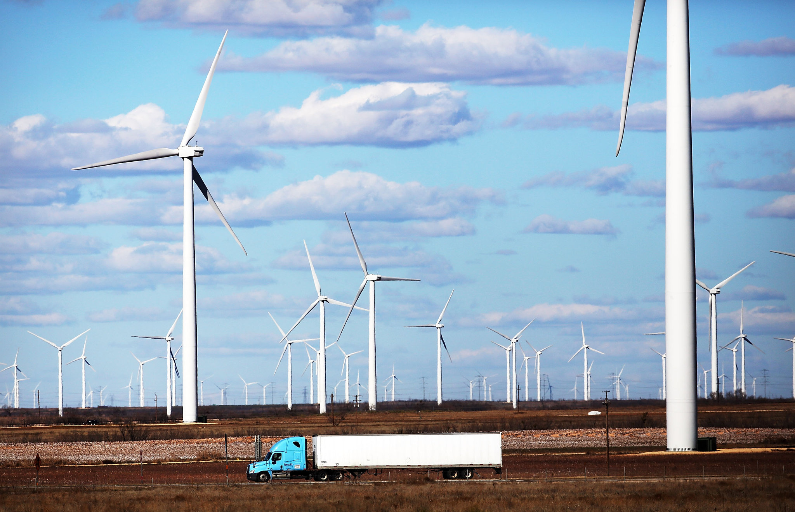
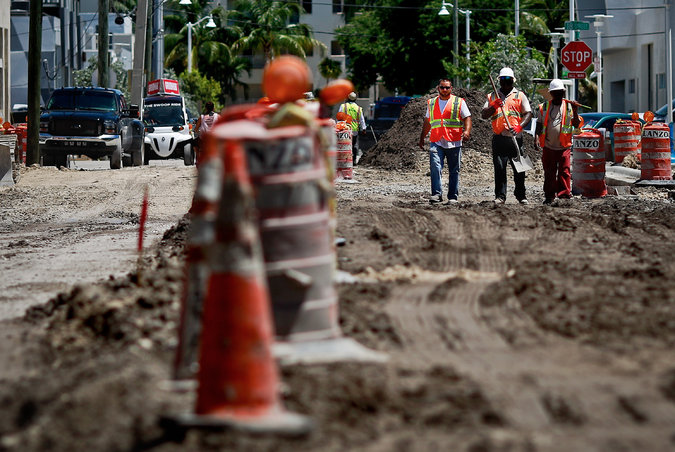

As Trump Signals Climate Action Pullback, Local Leaders Push Forward
The incoming Trump administration appears determined to reverse much of what President Obama has tried to achieve on climate and environment policy.
In position papers, agency questionnaires and the résumés of incoming senior officials, the direction is clear — an about-face from eight years of policies designed to reduce climate-altering emissions and address the effects of a warming planet. The Republican-led Congress appears to welcome many of these changes.
But mayors and governors — many of them in states that supported President-elect Donald J. Trump — say they are equally determined to continue the policies and plans they have already adopted to address climate change and related environmental damage, regardless of what they see from Washington.
“With a federal government that’s hostile to climate action, more and faster climate action work from cities, states and businesses will be required to stay anywhere near on track with our carbon pollution goals,” said Sam Adams, the former mayor of Portland, Ore., and current director of the World Resources Institute United States.
“In many cases, the solutions that help address climate change are what you have to do anyway in a city — transit options so the city doesn’t get gridlocked, which reduces greenhouse gas emissions and unlocks a tremendous amount of economic competitiveness because you don’t have thousands of people stalled in traffic,” Mr. Adams added.
In last month’s election, Seattle, Los Angeles and Columbus, Ohio, voted to expand mass transit. Portland, Ore., which many say is the most environmentally minded city in the country, began a new municipal waste program a few years ago, resulting in higher recycling and composting rates, and smaller amounts of trash headed to landfills. Miami Beach is raising roadbeds and building flood walls to hold back the rising seas.
California, led by the Democratic Gov. Jerry Brown, has adopted a cap-and-trade program, which limits carbon dioxide emissions and sets up a market for companies to buy and sell carbon allowances, so companies can meet or come under that carbon dioxide limit. The state has set one of the nation’s most ambitious climate targets — to reduce its greenhouse gas emissions to 40 percent below 1990 levels by 2030. Hawaii is planning to use 100 percent renewable energy by 2045.
Governor Brown delivered a fiery defense of his state’s environmental policies at a meeting of the American Geophysical Union in San Francisco last week. He scoffed at reports that some Trump transition officials wanted to eliminate the National Aeronautics and Space Administration’s system of earth-observing satellites.
“If Trump turns off the satellites,” he said, “California will launch its own damn satellite.”
Though stymied by alternating bouts of congressional gridlock or fossil-fuel-friendly presidential administrations over the last two decades, cities and states have been able to take substantive action. They have fortified themselves against rising seas, switched to renewable sources of energy, expanded mass transit and reduced greenhouse gas emissions. Whatever happens or does not happen in Washington, officials say, these projects will continue.
Leaders in some cities feel that without presidential leadership it will be hard to achieve the swift transition that dealing with climate change requires. Many fear that they will not get federal funds or national policies needed to make it happen.
Still, many mayors and state officials are optimistic about their plans already in motion and those that are scheduled over the next few years.
“We feel really good, and we don’t see this election slowing us down,” said Eric Garcetti, mayor of Los Angeles. “We’re not going to wait for action from the federal government. We’re taking action now and securing our values.”
While experts caution that there are areas where federal regulations can determine what states and local governments are able to accomplish, they maintain that a climate-skeptical administration could not halt all the momentum generated locally over the last two decades.
About 60 percent of Americans live in cities, which generate most of the country’s greenhouse gas emissions.
“Cities are where climate change problems originate, and therefore that’s where the solutions are,” said Michael R. Bloomberg, the former mayor of New York City who is co-chairman of the Global Covenant of Mayors for Climate and Energy and the United Nations’ Secretary General’s special envoy for cities and climate change.
A number of cities have made substantial progress. In Miami Beach, where $400 million has been invested to deal with flooding, roads have been elevated and sea walls have been constructed. Susanne M. Torriente, the city’s chief resiliency officer, said the city had also recently completed its greenhouse gas inventory and now would aim to reduce its emissions, regardless of federal policy.
Whatever policies the Trump administration adopts, she said, “won’t really be a big change for us.”
Republican mayors also govern some cities that are especially vulnerable to climate change. James C. Cason, the mayor of Coral Gables, Fla., is working to protect the city from some of the flooding it is already experiencing and to prepare it for more flooding that will most likely accompany rising sea levels. Florida has a Republican governor, Rick Scott, who has questioned the cause and extent of climate change, but that has not stopped Mr. Cason and other Republican mayors in South Florida from making pragmatic decisions on the issue.
Cities have also seen lots of benefits from networks — the Compact of Mayors, which has been signed by more than 120 American cities, C40 Cities Climate Leadership Group, Climate Mayors and others — most notably, information sharing and solutions, and reaffirming commitments to each other and to their citizens, as many mayors did in a recent letter to the president-elect.
Depending on their state, however, cities are somewhat limited in what they can do from a legislative or regulatory standpoint.
Some policy experts and state officials maintain that state governments, if they are willing to act on climate or energy policy, are where the measurable progress is made.
In most states, governors and legislatures have the authority to regulate the two biggest sources of emissions: power plants and transportation.
States can set automotive fuel-efficiency standards, and in the case of California, effectively set them for the whole country, experts said. Twenty-nine states require that a certain percentage of their electricity comes from renewable sources, known as a portfolio standard, and another eight have voluntary portfolio standards or targets. In addition to California, nine other states, grouped in the Regional Greenhouse Gas Initiative, known as R.G.G.I., and 17 governors, mostly from that group of 29, have also signed the Governors’ Accord for a New Energy Future, which commits their states to certain sustainability goals.
New York has also enacted progressive climate policies, rivaling California, largely by engaging market solutions, in particular attempting to reform the state’s utility system.
Republican-led states, which may not be favorable to climate policy, have still achieved meaningful progress, especially when it comes to renewable energy, because of the economics of the wind and solar industries. Texas, for instance, has more wind power than any other state, largely a product of deregulating the utility market, but also of subsidies from the federal government and tax credits.
Robert Perciasepe, president of the Center for Climate and Energy Solutions, said that there were areas where national policies could hamstring state efforts.
The federal government, he said, can be helpful in getting states to work together, though it is not essential to those efforts, as demonstrated by R.G.G.I. or the Governors’ Accord.
And while achieving meaningful reductions may not be without difficulty, Mr. Perciasepe said, “I’m comforted that we have so much momentum, though we still need to be going faster, and the fact that we need to continue to accelerate may be lost.”